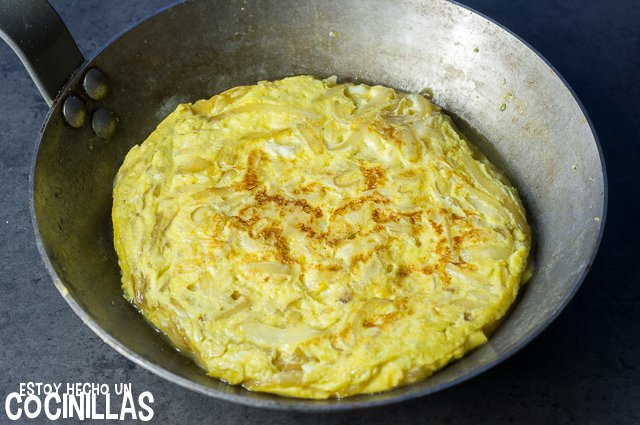

Tortilla de Cebolla
Receta de Tortilla de Cebolla

Ingredientes
- Cebollas
- Huevos
- Aceite
- Pimienta
- Sal
Elaboracion (Pasos)
- Poner en una sarten honda una buena cantidad de aceite y calentar.
- Pelamos las cebollas y las picamos finitas.
- Freimos, a fuego suave, las cebollas. Cuando esten fritas las salpimentamos.
- En un bol amplio batimos mucho los huevos y mezclamos con las cebollas fritas
- En la misma sarten, que hemos utilizado para freir las cebollas, quitamos el exceso de aceite y agregamos la masa
- Cuando este la parte de abajo cuajada, le daremos la vuelta con ayuda de un plato.
- Cuajamos la parte que quede abjo ahora y servimos. Degustar inmediatamente.
INICIO